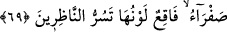
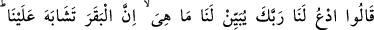
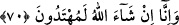
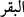

69. Bu defa: Bizim için Rabbine duâ et, bize onun rengini açıklasın, dediler. “O
diyor ki: Sarı renkli, parlak tüylü, bakanların içini açan bir inektir” dedi.
İsrâîloğulları kesilecek ineğin renginin de belli olmasını istemekteydiler. Mûsâ (a.s.),
rabbine yalvarıp da O’ndan açıklama gelmesi üzerine onun sarı olduğunu bildirmiştir.
Bu inek, güzelliği, renginin sarılığı; boynuzlarının, tırnaklarının güzelliği ve
yaratılışının kusursuzluğu sebebiyle bakanlara kendini beğendirir, onları sevindirir.
“Sürûr”; umulan bir faydanın gerçekleşmesiyle kalbde hâsıl olan lezzettir.
Hz. Ali (r.a.): “Kim sarı pabuç giyerse üzüntüsü azalır; çünkü Allah Teâlâ sarı renge
bakanlara ferahlık verir.” buyurmaktadır.
70. “(Ey Mûsâ!) bizim için, Rabbine duâ et de onun nasıl bir sığır olduğunu bize
açıklasın, nasıl bir inek keseceğimizi anlayamadık. Biz, inşâallah emredileni yapma
yolunu buluruz” dediler.
Rabbine, tarafımızdan onun mâhiyeti hakkında sor: Otlak ve çayırda serbest dolaşan
bir hayvan mıdır, yoksa ahırda mı beslenir?”
Bu âyet hakkında el-Keşşâf ’ta şu açıklama vardır: “Bu âyette, yahûdîlerin o ineğin
keyfiyyeti hakkında tekrar tekrar soru sordukları, ve onun vasıflarıyla ilgili lüzûmsuz
ayrıntılı bilgiler istedikleri anlatılmaktadır. Oysa bu tür konularda çok sual sorup
inceden inceye tecessüs hoş bir şey değildir.”
Ömer b. Abdülaziz şöyle demiştir: Sana, birine koyun vermeni emretsem, “Sen bana
koyun mu, yoksa keçi mi?” diye sorsan ben de ona cevap versem. Arkasından: “erkek
mi, dişi mi?” desen, onu da açıklasam; tekrar: “Siyah mı, beyaz mı?” desen, sorular uzar
gider. Öyleyse sana bir şeyi emrettiğim zaman, onun hakkında bana tekrar soru sorma!”
Nitekim hadis-i şerifte de şöyle buyurulmuştur: “İnsanların en büyük günah işleyeni,
sora sora, haram olmayan bir şeyin haram olmasına sebeb olanıdır.”[309]
İsrâîloğulları: “Orta yaşlı, sarı renkli inekler çoktur, biz hangisini keselim, şaşırdık.”
dediler. Burada kelimenin “bakar” ( __WORD__ ) şeklinde müzekker olarak geçmesi “inek”
cinsini ifâde etmek içindir.
Hadis-i şerifte buyurulmuştur ki: “Benî İsrâîl, eğer inşâallah demeseydi bir daha
asla açıklama gelmezdi.”[310]